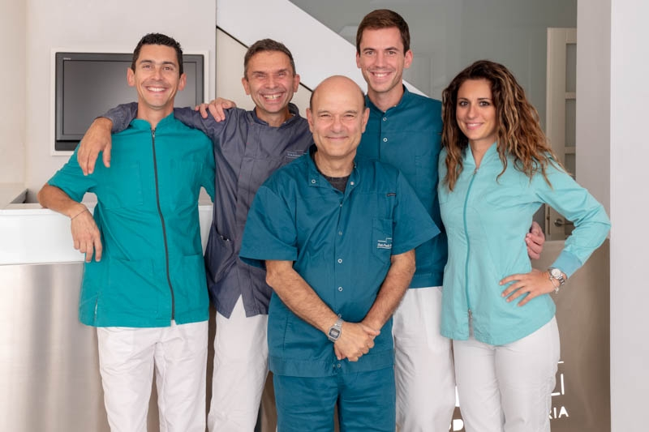
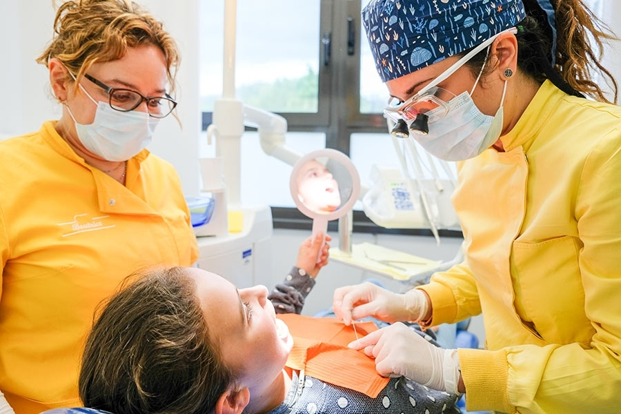

Endodonzia
Cura dei canali radicolari con precisione e tecnologia avanzata per salvaguardare la tua salute dentale.
Scopri di più →Con un'esperienza pluridecennale, ci prendiamo cura del tuo sorriso con tecnologie all'avanguardia e un approccio che mette il paziente al centro di tutto.

Cura dei canali radicolari con precisione e tecnologia avanzata per salvaguardare la tua salute dentale.
Scopri di più →Diagnosi e trattamenti personalizzati per un sorriso allineato e una funzione masticatoria ottimale.
Scopri di più →Soluzioni implantari con diagnostica 3D all'avanguardia per un risultato naturale e duraturo.
Scopri di più →Passione e precisione con le più moderne apparecchiature per protesi fisse, mobili e su impianti.
Scopri di più →Sbiancamento con sostanze sicure e scientificamente testate per un sorriso luminoso e naturale.
Scopri di più →Cura e restauro dei denti colpiti da processi cariosi preservando il più possibile la struttura dentale originale.
Scopri di più →Radiografia digitale e TAC Cone Beam 3D per diagnosi accurate con la minima esposizione ai raggi X.
Scopri di più →
Lo Studio Dentistico Torricelli nasce dalla passione per l'odontoiatria e dalla profonda convinzione che ogni paziente meriti cure personalizzate, attente e rispettose. Con oltre trent'anni di attività a Figline Valdarno, abbiamo accompagnato intere famiglie nel percorso verso una salute orale eccellente.
Il nostro approccio è profondamente umano: ascoltiamo le esigenze di ogni paziente, spieghiamo con chiarezza le opzioni disponibili e costruiamo insieme il percorso di cura più adatto. Le tecnologie avanzate di cui siamo dotati sono strumenti al servizio di questo approccio, non il contrario.
La multidisciplinarietà è il nostro punto di forza: collaboriamo con specialisti in osteopatia, dietologia e posturologia per offrire una visione completa della salute del paziente, andando oltre il semplice trattamento dentale.
Oltre 30 anni di pratica clinica e aggiornamento continuo
TAC Cone Beam 3D, radiografia digitale e strumentazione di ultima generazione
Ogni trattamento è pensato intorno alle esigenze uniche di ogni persona
Imaging tridimensionale di altissima precisione per diagnosi accurate in implantologia, ortodonzia e pianificazione chirurgica avanzata.
Immagini immediate con esposizione ridotta ai raggi X. Qualità diagnostica superiore per endodonzia, carie e valutazione parodontale.
Attrezzature all'avanguardia per ogni tipo di trattamento: dalla sterilizzazione certificata ai sistemi di precisione per chirurgia implantare.
Con un approccio tranquillo e rassicurante riusciamo a trattare la quasi totalità dei nostri pazienti. Per chi conserva un po' di ansia, abbiamo soluzioni dedicate per rendere l'esperienza il più confortevole possibile.
Avevo una grande paura del dentista, ma qui mi sono sentita subito a mio agio. Professionalità, competenza e gentilezza: lo Studio Torricelli è diventato il mio punto di riferimento per tutta la famiglia.